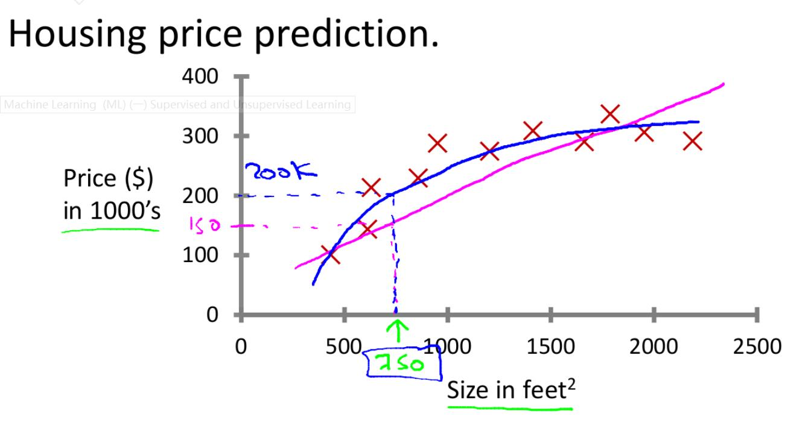
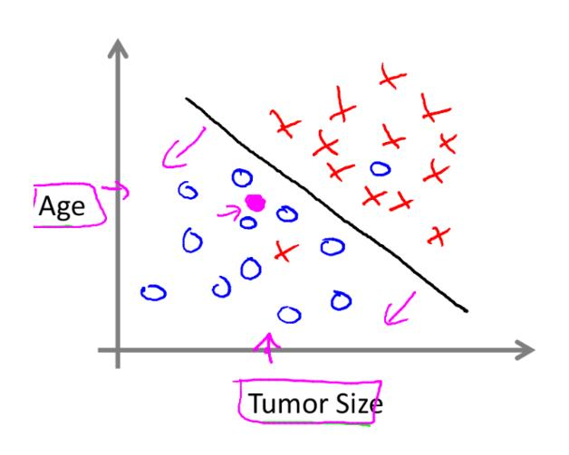

Today, I start to learn the course about the Machine Learning.
Firstly, what is the machine learning(ML)? In fact, ML is the field of study that gives computer the ability to learn without being programmed. A computer programs can learn for the experience (E) with respect to some task (T) and performance measure (P–probability). Its performance on task (T) measured by P can improve the experience (E).
Machine learning can be assigned to 2 classifications: Supervised learning and Unsupervised learning. ML problem is related to these two type.
- Supervised learning is the machine learning task of learning a way to map the input signals to output values. The procedure of supervised learning is very obvious. First step is to give the data set. Then learning algorithm will produce a value. (Training a model on a set of training data{input x, output y})
There are two learning problems including linear regression and classification.
Regression is a problem that try to map the input value to output value in continuous function. It is mainly responsible for returning a real value.
This is the example of regression. (Predicting the housing price)
Classification is a problem of classifying input values into some discrete categories. (some output 0/1)
 - Unsupervised Learning is a machine learning task of inferring a function to describe hidden structure from ‘unlabeled’ data. Some problems belonging to this learning usually approach some problems with little answers or no ideas what results look like. One way to derive the structure from unlabeled data is clustering (聚合). Clustering can try to group the data related to different variables into same groups based on relationship between variables on data. Unsupervised learning also can infer if some examples in data set do not conform to some expected pattern. In conclusion, I mainly discussed the definition of machine learning today. Also, machine learning consists of 2 parts including supervised and unsupervised learning. Next time, I will be ready for Model and Cost function.